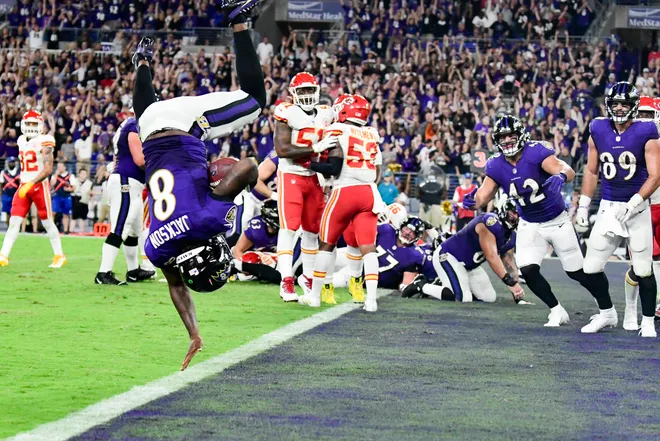

About 4th & 29
In the last game of the 2012 NFL regular season the Baltimore Ravens were losing to the Chargers 10-13 with only 1:59 left in the game. The Ravens converted this 4th down conversion which would lead them to win the game, make the playoffs, and ultimately win the Super Bowl.
Play Like a Raven!
Learn about our team, its history, and what makes the Baltimore Ravens special. Whether you're a long-time fan or just getting into football, this page is your go-to source for all things Ravens.
M&T Bank Stadium

Lamar Jackson
